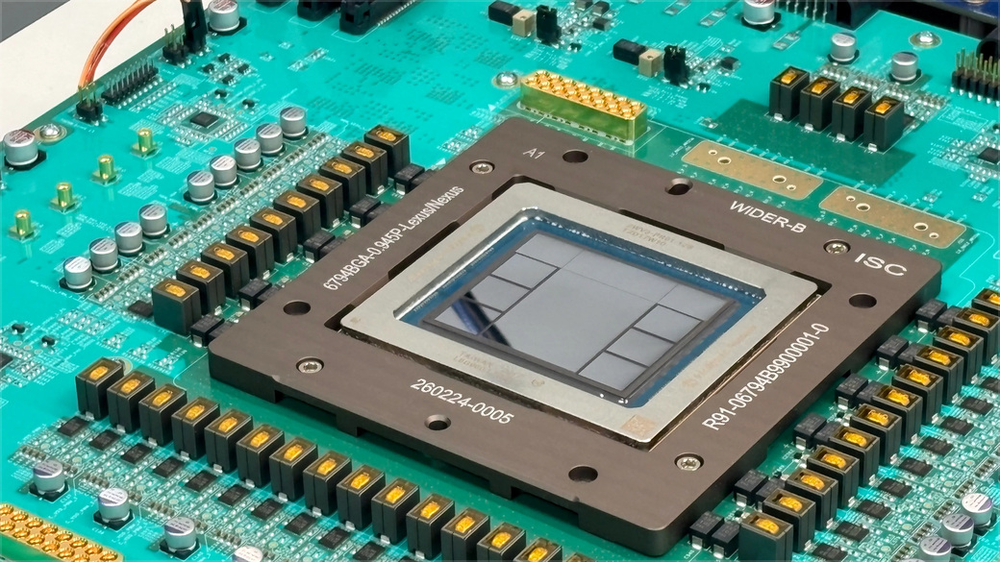
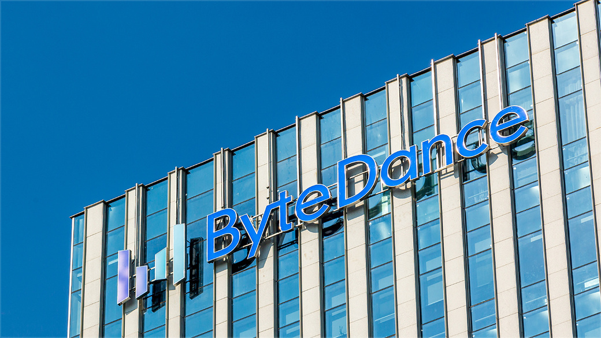

01
MERCATI
Stability AI chiude un nuovo round da 76 milioni di dollari
Stability AI, l'azienda dietro l'immaginatore Stable Diffusion, ha raccolto 76 milioni di dollari in un nuovo round di finanziamento. Il totale raccolto dall'inizio arriva così a 232 milioni.
La notizia, riportata da TechCrunch, arriva in un momento delicato per l'azienda, che ha attraversato turbolenze interne e una crescita frenetica del mercato delle immagini generate. Il denaro serve a restare competitiva in un campo dove i big tech e decine di startup stanno offrendo modelli sempre più potenti e a costi più bassi.
Leggi su TechCrunch →
02
CINA
XPeng raccoglie più di 900 milioni per i robot umanoidi
XPeng, l'azienda cinese di veicoli elettrici, ha chiuso un round record per il suo business di robot umanoidi: oltre 900 milioni di dollari. L'obiettivo è usare la catena di approvvigionamento automobilistica per produrre robot in scala.
Come riporta Pandaily, XPeng punta a replicare con i robot lo stesso approccio che ha usato con le auto: partire da una nicchia tecnica ed espandersi rapidamente. La Cina sta investendo massicciamente nella robotica come prossima frontiera dell'IA applicata al mondo fisico.
Leggi su Pandaily →
03
POTERE
La SEC indaga le banche Wall Street sul fondo di Aschenbrenner
La Securities and Exchange Commission ha emesso mandati di comparizione a grandi banche di Wall Street nell'ambito di un'indagine sul fondo di hedge gestito da Leopold Aschenbrenner, 'Situational Awareness'. Il fondo è quasi collassato a luglio prima di siglare un accordo con Citadel.
La notizia, confermata da TechCrunch e riportata dal Financial Times, è significativa perché mostra come l'IA stia diventando un campo di scontro non solo tecnico, ma anche finanziario e regolatorio. Le valutazioni basate su previsioni a lungo termine sull'IA attirano l'attenzione dei supervisori.
Leggi su Financial Times →
04
IL FATTO
OpenAI presenta Jalapeño, il suo primo chip per l'inferenza IA
OpenAI ha svelato i primi risultati del chip personalizzato per l'inferenza, chiamato Jalapeño. L'azienda dichiara velocità e efficienza energetica leader nel settore, con un'elaborazione più rapida e un consumo ridotto per i modelli moderni.
La notizia, confermata da TechCrunch, segna una svolta strategica: OpenAI non si accontenta di usare i chip di Nvidia, ma vuole controllare l'intera catena del valore, dal modello al silicio. Un passo che ha implicazioni enormi per il mercato dei semiconduttori.

Leggi su OpenAI →
05
AVANTI
ByteDance lancia Doubao Work, l'agente IA per le aziende
ByteDance ha lanciato ufficialmente Doubao Work, un nuovo agente IA orientato alla produttività. Il sistema può scomporre gli obiettivi dell'utente, chiamare strumenti e gestire compiti complessi. È integrato con Feishu, la piattaforma di lavoro dell'azienda.
Come riportato da TechNode e Pandaily, l'offerta include 30 giorni di accesso gratuito. È una mossa diretta contro Microsoft Copilot e gli altri assistenti IA per le aziende, con il vantaggio di un ecosistema già integrato in molte realtà cinesi.

Leggi su TechNode →